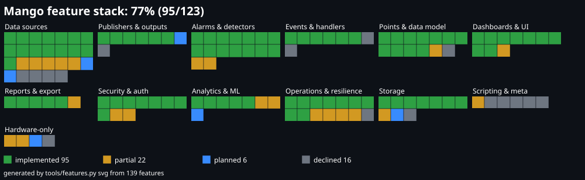

Every figure on this page is recomputed from the repository at the last commit of each UTC day, the same way a daily build report would count it. Where a day shows no change, the tree genuinely did not change.
durian/run_all.py| Date (UTC) | Commits | Modules | Test suites | Server lines | Test lines |
|---|
| Area | Built | Verified by |
|---|---|---|
| Data in | Virtual, MQTT over TLS, Sparkplug B over MQTT, Modbus TCP/RTU/ASCII, SNMP v2c with a bounded GETNEXT walk, DNP3 over TCP, BACnet/IP, HTTP JSON poll, read-only SQL, HTTP push with scoped tokens, a local name=value file, host system metrics, eGauge inst XML, Project Haystack read, POP3 mailbox numbers, InfluxDB line protocol at /api/ingest/<source>/line (tags ignored); Sparkplug B is now also published | test_modbus*, test_pull_sources, test_ingest, test_sparkplug_source, test_snmp_source, test_dnp3_source, test_bacnet_source, test_file_source, test_system_source, test_egauge_source, test_haystack_source, test_pop3_source, test_ingest_line, test_sparkplug_pub; fake servers only for the new network sources |
| Data model | Numeric and text points, engineering range, units, decimals, binary and multistate labels, folders, tags, descriptions | test_app, test_text_points |
| Quality and time | GOOD / UNCERTAIN / BAD per value, source timestamps, future-clock and stale rules, out-of-order drop | test_quality |
| Alarms | 13 detectors with on-delay, off-delay and deadband; ISA-18.2 states; shelving, suppression, out of service, maintenance windows; journal; KPIs; acknowledge-all; per-point scan classes (poll every n-th cycle, Modbus path) | test_scan_classes, test_core, test_holds, test_maintenance, test_journal |
| Control | Permissioned writes, engineering limits, max step, per-point write rate limit (min_write_gap), two-step confirm, reason required, audit with old and new value | test_safe_control, test_set_value_required |
| Outbound | Webhook, email, Slack, escalation, set-point handler, scheduled reports, MQTT publisher, Sparkplug B publisher, HTTP sender, persistent TCP publisher with reconnect backoff | test_handlers, test_http_sender, test_sparkplug_pub, test_tcp_publisher |
| HMI | Overview, point page with trend, forecast and logbook, history comparison, dashboards with 10 widget types, drag-and-drop designer, mimic editor, kiosk and public views | test_dashboards, test_prediction_widget; 13 browser checks, all in CI |
| Accounts | scrypt passwords, sessions, role inheritance, lockout, TOTP second factor, reset by one-time code, account disable, offline admin reset, scoped machine tokens, LDAP simple-bind sign-in for names with no local account | test_ldap_auth, test_auth, test_mfa, test_disabled, test_reset |
| Storage | SQLite or MySQL/MariaDB, versioned migrations, eight rollups, retention, backups, buffered writes with a system alarm, unique history rows per (point, time), read-only admin SQL console (SELECT only, secret tables refused, audited) | test_sql_console, test_history_unique, test_store, test_series, test_maintenance |
| Transport | TLS 1.2+ with HSTS and Secure cookies when a certificate is given; plain HTTP refuses any non-local address | test_tls |
| Data out | History CSV, reports, one-click and scheduled export bundles (history, events, config, manifest) in one ZIP, and retrieval of the bundles the scheduler wrote; report export as Excel (.xlsx) and PDF, stdlib only | test_report_formats, test_export, test_export_retrieve, test_reports |
| AI/ML | EWMA baseline, robust-z score, short-horizon forecast with a 95% band (linear, or a robust Theil-Sen option); a seasonal hour-of-week baseline with a per-slot score route; change-point detection; Pearson/Spearman correlation with best lag and a related-points ranking that never names a point the caller cannot see; a backtest reporting MAE, RMSE and 95% coverage across naive, linear, robust and seasonal-naive; a predictive TREND_LIMIT detector (alarms when a limit is projected to be reached within a horizon); persisted per-point models retrained daily in bounded batches, with an admin retrain route; a prediction dashboard widget that says when no honest forecast exists | test_forecast, test_prediction_widget, test_anomaly, test_seasonal, test_changepoint, test_correlate, test_backtest, test_trend_limit, test_models. Measured: on a ramp with spikes robust MAE 0.90 vs linear 79.53; on a seasonal series seasonal-naive 0.436 vs linear 6.370; coverage about 0.945 for linear and robust on Gaussian noise; TREND_LIMIT alarmed on 0 of 300 noise seeds. Synthetic data only, no real plant series |
| Security hardening | A penetration test of the new surface: POP3 pattern-shape guard and a 2000-character match cap, bytes counted as they arrive, ssl by default; file source with printable bounded text, bounded reads, devices and special files refused; eGauge accepts only a host name or address literal; LDAP one lockout and account per case-folded name, reserved names refused, no admin default role; SQL console byte caps and blobs as hex; report dates bounded and exports surrogate-safe; line-protocol overflow is a 422 | test_pop3_source, test_file_source, test_egauge_source, test_ldap_auth, test_sql_console, test_report_formats, test_ingest_line. Equalised login timing is not measured, and the MySQL/MariaDB paths were not run |
| Resilience | Atomic reload (the new engine is built before the old one stops); bounded, health-reporting MQTT publishers; stop() never blocks; recovery from a backward clock step; NaN source timestamps refused; atomic migration v11; partial-backup cleanup; POP3 marks a message seen only after retrieval | test_output_resilience, test_clock_step, test_ts_nan_mqtt, test_history_unique, test_store, test_pop3_source; migration v11 and backup cleanup only on SQLite |
| Operations | Safe mode (--safe or DURIAN_SAFE=1: login, config and backup, no sources, publishers or tick); the durian command line (run, supervise, check, backups, restore, passwd, version) plus start, status, stop, restart and logs, which run a detached supervised server with a log file and pid file and stop it through a stop file with a kill fallback (this also fixed durian supervise argv and the detached child losing its output); a tick lease that records host and pid so a dead local holder is replaced at once; frozen-build path resolution; a failsafe spool (NDJSON segments, 50 MB bound, replayed oldest-first, a spool block in /api/health); a supervisor with backoff and one safe-mode start on a crash loop; systemd unit and a Windows startup-task installer; MariaDB CI fixes (statement timeout name, exact-case account lookup); a single-file executable and a tag-triggered release workflow. First release v20261028-DEV, 2026-10-28: durian-windows-x86_64.exe (15.4 MB), durian-linux-x86_64 (30.7 MB) and SHA256SUMS, both builds passing tests and smoke on GitHub | test_service_control, test_lease_takeover, test_cli, and the safe-mode, spool, supervisor and store suites. Not run: the installers, the supervisor SIGTERM path end to end. The exe is unsigned. The spool covers history only |
| Console | Sidebar navigation (collapsible, mobile drawer), light and dark themes with a toggle, health banner, toasts, skeletons, flicker-free polling that patches the DOM; Ctrl+K command palette (accessible combobox, ranked matches, recent picks) to jump to a page, point or dashboard or run an action; sign-in and two-factor setup with six-digit code boxes, a three-step setup with a copyable key (no QR code), inline turn-off | test_about; browser checks (13, all in CI) including the new palette check and the extended account check. NOT verified: no person has looked at the redesigned console; the 2FA assertions were written after the code and the clipboard check is stubbed; the mobile header wraps to three rows; light-dark() needs Chrome 123, Safari 17.5 or Firefox 120 |
| Modelling | Engineering units with an optional display unit and conversion, tags inherited from folder and source | test_units |
| Federation | SSO sign-in through OpenID Connect: authorization code with PKCE, RS256 from the provider JWKS, same sessions and roles | test_oidc |
| Safety net | A permission matrix over every dispatcher branch, background jobs for backups and source tests, bounded in-memory state, percent-decoded route names | test_permissions, test_jobs, test_bounded_state, test_route_names |

| Feature | Status | Evidence | Note |
|---|---|---|---|
| Virtual generator (Mango virtualDS) | implemented | durian/config.pytests/test_core.py | Sine, ramp, random and similar generators. |
| Host vitals source (Mango vmstat, internal) | partial | durian/config.pytests/test_system_source.py | Free disk bytes, process CPU seconds, CPU count; stdlib only, so no memory or load-average series. |
| Modbus TCP / RTU / ASCII (Mango modbus) | implemented | durian/modbus.pydurian/modbus_source.pydurian/modbus_sim.pytests/test_modbus.pytests/test_modbus_source.pytests/test_modbus_finite.py | Reads and writes; RTU only proven over a socket URL, never a real COM port (debt U1). |
| MQTT subscriber over TLS (Mango mqttClientDataSource) | implemented | durian/mqtt_source.pytests/test_mqtt_source.pytests/test_mqtt_health.pytests/test_tls.py | One value per point per poll, the latest message (deliberate, debt section 6). |
| Sparkplug B source | partial | durian/sparkplug_source.pydurian/sparkplug_codec.pytests/test_sparkplug_source.pytests/test_sparkplug_codec.py | Read-only: no command topics, STATE or rebirth request; never met a real broker (debt U9). |
| SNMP source (Mango snmp) | partial | durian/snmp_source.pytests/test_snmp_source.py | v2c GET and a bounded GETNEXT walk only: no v3, traps or table model; fake agent only (debt U8). |
| DNP3 over TCP (Mango dnp3) | implemented | durian/dnp3_source.pytests/test_dnp3_source.py | Read-only master; fake outstation only (debt U10). |
| BACnet/IP (Mango BACnet) | implemented | durian/bacnet_source.pytests/test_bacnet_source.py | Read-only; fake device only (debt U11). |
| OPC UA client | partial | durian/opcua_source.pytests/test_opcua_source.py | SecurityPolicy None only; no Browse or subscriptions; fake server only (debt U12). |
| OPC DA (Mango opcda) | declined | TECHNICAL_DEBT.md | Needs Windows COM/DCOM, which is not stdlib. |
| HTTP JSON poll (Mango http) | implemented | durian/http_source.pydurian/polled.pytests/test_pull_sources.py | No redirects followed; scaling per point. |
| HTTP ingest push with scoped tokens | implemented | durian/ingest.pytests/test_ingest.pytests/test_backfill.py | Explicit old timestamps backfill history without moving the point's last value. |
| Line-protocol ingest (Mango lineProtocolDataSource) | partial | durian/ingest.pytests/test_ingest.pytests/test_ingest_line.py | Tags are ignored and timestamps are always nanoseconds (debt section 6). |
| Read-only SQL source (Mango sqlds) | implemented | durian/sql_source.pytests/test_pull_sources.py | SELECT only. |
| Text file source (Mango dataFile / asciiFile) | implemented | durian/file_source.pytests/test_file_source.py | name=value or name,value lines; bounded size and lines; device names refused on Windows. |
| Project Haystack (Mango Haystack) | implemented | durian/haystack_source.pytests/test_haystack_source.py | The read op; authentication beyond a Bearer token never ran (debt U13). |
| eGauge meters (Mango egauge) | implemented | durian/egauge_source.pytests/test_egauge_source.py | Parses the documented inst XML; fake server only (debt U13). |
| POP3 mailbox values (Mango pop3) | implemented | durian/pop3_source.pytests/test_pop3_source.py | ssl by default, ReDoS-guarded patterns, 2000-character match cap (debt W1). |
| Calculated points from a checked expression language | implemented | durian/calc.pytests/test_calc.pytests/test_calc_health.py | No eval; see Scripting & meta for the declined scripted variant. |
| Scan classes and source-down alarms | implemented | durian/core.pytests/test_scan_classes.pytests/test_source_down.pytests/test_core.py | Per-point scan multiplier, comms health per source, back-off. |
| Test-this-source button | implemented | durian/testsource.pytests/test_testsource.py | Runs on a background worker. |
| Generic TCP/IP data source (Mango TCPIP) | planned | none | Only a TCP publisher exists; no inbound raw-socket source. Not yet designed; no public documentation read for it. |
| Persistent TCP receiver (Mango persistent, source side) | planned | none | The publisher half exists (Publishers & outputs); the receiving data source does not, and how the pair negotiates was never examined (research 99). |
| SSH command data source (Mango ssh) | declined | docs/research/99-open-questions.md | Needs an SSH library (not stdlib) and runs commands on a remote host; same reasoning as the declined process handler. |
| Vendor cloud connector (Mango cloudConnect) | declined | none | Ties the product to a vendor cloud service; out of scope for a clean-room reference. |
| Energy-management module (Mango ems) | declined | none | A vendor add-on never described in the public pages read; eGauge and calculated points cover the metering basics. |
| Feature | Status | Evidence | Note |
|---|---|---|---|
| MQTT publisher | implemented | durian/outputs.pytests/test_output_health.pytests/test_output_resilience.py | Bounded, health-reporting; stop() never blocks. |
| HTTP sender publisher | implemented | durian/outputs.pytests/test_http_sender.py | Posts {point, value, ts, quality} JSON; optional Bearer token. |
| Sparkplug B publisher | implemented | durian/sparkplug_publisher.pydurian/sparkplug_codec.pytests/test_sparkplug_pub.pytests/test_sparkplug_codec.py | Never met a real broker (debt U9). |
| Persistent TCP publisher (Mango persistent, publisher side) | implemented | durian/outputs.pytests/test_tcp_publisher.py | Reconnect with back-off. |
| gRPC publisher | declined | docs/research/11-mango-feature-analysis.md | Not built: needs HTTP/2 and protobuf, not stdlib; MQTT and the webhook handler cover the integration. |
| OPC UA server | planned | docs/research/10-scada-baseline.md | Listed as a gap in the SCADA baseline; the client exists, the server does not. |
| Node-RED integration flows and end-to-end check | implemented | integrations/node-red/README.mdintegrations/node-red/durian-flows.jsontools/nodered_check.pytools/make_nodered_flows.py | Examples, not a node package. |
| Delivery health and operator-readable failures for outputs | implemented | durian/outputs.pydurian/app.pytests/test_output_health.pytests/test_app.py | Failures reach the operator as a sentence. |
| Feature | Status | Evidence | Note |
|---|---|---|---|
| High and low limit detectors | implemented | durian/core.pytests/test_core.py | On-delay, off-delay, deadband, seven levels. |
| Rate-of-change detector | implemented | durian/core.pytests/test_core.pytests/test_rate_same_timestamp.py | |
| No-update detector | implemented | durian/core.pytests/test_core.py | |
| State, range, change and no-change detectors | implemented | durian/core.pytests/test_core.py | |
| Smoothness and CUSUM detectors | implemented | durian/core.pytests/test_core.py | |
| Text detector for text points | implemented | durian/core.pytests/test_core.pytests/test_text_points.py | |
| ANOMALY detector (EWMA robust-z) | implemented | durian/core.pydurian/forecast.pytests/test_core.pytests/test_anomaly.pytests/test_forecast.py | Judges a sample against the window before it. |
| TREND_LIMIT detector (raises before a limit is crossed) | partial | durian/core.pytests/test_trend_limit.py | Window is memory-only and relearned after each reload; shallow trends alarm late (debt W2). |
| Non-finite and clock-step safety in detectors | implemented | durian/core.pytests/test_core.pytests/test_detector_nonfinite.pytests/test_clock_step.py | |
| ISA-18.2 alarm states, acknowledge and acknowledge-all | implemented | durian/core.pydurian/store.pytests/test_core.pytests/test_store.py | |
| Shelving, suppression by design, out of service | implemented | durian/app.pytests/test_app.pytests/test_holds.py | Reason and expiry on shelving. |
| Maintenance windows: drop, acknowledge, suppress (Mango maintenanceEvents) | implemented | durian/windows.pydurian/maintenance.pytests/test_windows.pytests/test_maintenance.py | Once, weekly or manual; scope by points, tags or sources. |
| Alarm journal and rate KPIs | implemented | durian/app.pytests/test_app.pytests/test_journal.py | |
| Seven alarm levels (none to life safety) | implemented | durian/core.pytests/test_core.py | |
| Advanced scheduler (Mango advancedScheduler) | partial | durian/windows.pytests/test_windows.py | Weekly and once-off maintenance schedules exist; no general cron-style scheduler for other objects. |
| System alarms for a failing tick and internal errors | implemented | durian/app.pytests/test_app.pytests/test_tick_health.pytests/test_internal_errors.pytests/test_error_sentences.py | docs/12-error-handling.md is the failure model. |
| Feature | Status | Evidence | Note |
|---|---|---|---|
| Webhook handler | implemented | durian/outputs.pytests/test_handlers.py | No redirects followed. |
| Email handler with SMTP, recipient groups and templates | implemented | durian/outputs.pytests/test_handlers.pytests/test_email_groups.py | Fake SMTP only (debt U3). |
| Slack handler (Mango slackPublisher) | implemented | durian/outputs.pytests/test_handlers.py | Incoming-webhook URL; local receiver only (debt U3). |
| Set-point handler | implemented | durian/outputs.pydurian/app.pytests/test_app.pytests/test_handlers.pytests/test_safe_control.py | Same limits and step size as an operator write; confirm step skipped. |
| Scheduled report handler | implemented | durian/outputs.pytests/test_reports.pytests/test_report_formats.py | |
| Escalation of an unacknowledged alarm | implemented | durian/outputs.pydurian/app.pytests/test_app.pytests/test_handlers.pytests/test_shared_state.py | Guarded so two processes do not double-escalate. |
| Process event handler | declined | TECHNICAL_DEBT.md | Runs arbitrary commands on the server; the webhook handler reaches anything external. |
| Script event handler | declined | docs/research/11-mango-feature-analysis.md | Runs arbitrary code on the server. |
| Feature | Status | Evidence | Note |
|---|---|---|---|
| Numeric points with unit, range, decimals, description | implemented | durian/config.pydurian/core.pytests/test_app.pytests/test_core.py | |
| Binary and multistate labels | implemented | durian/config.pydurian/core.pytests/test_app.pytests/test_core.py | Values stay numbers underneath. |
| Alphanumeric (text) points | implemented | durian/core.pytests/test_core.pytests/test_text_points.py | |
| Image points | declined | docs/research/11-mango-feature-analysis.md | History, detectors and every chart assume a number or short text; images would touch all of them. |
| Logging modes: on change, interval, tolerance | implemented | durian/core.pytests/test_core.pytests/test_series.py | Interval keeps last, average, minimum or maximum. |
| Quality and source timestamps | implemented | durian/core.pydurian/ingest.pytests/test_core.pytests/test_quality.pytests/test_ingest.py | GOOD / UNCERTAIN / BAD; future-clock, stale and out-of-order rules. |
| Tags, folders and inheritance | implemented | durian/config.pydurian/units.pytests/test_app.pytests/test_units.py | Tags inherited from folder and source. |
| Engineering units and display-unit conversion | implemented | durian/units.pytests/test_units.py | |
| Watch lists: static, query-based, personal (Mango watchlists) | implemented | durian/app.pytests/test_app.pytests/test_watchlists_query.pytests/test_my_lists.py | Hierarchy is covered by folders. |
| Bulk CSV import and export of points | implemented | durian/pointcsv.pytests/test_pointcsv.py | |
| Safe control: limits, max step, rate limit, confirm, reason | implemented | durian/app.pytests/test_app.pytests/test_safe_control.pytests/test_set_value_required.py | Only Modbus writes to a device; the other protocols are read-only. |
| Operator notes (logbook) | implemented | durian/notes.pytests/test_notes.py | |
| Unknown-setting guard and import validation | partial | durian/config.pytests/test_config_keys.pytests/test_import_keys.py | Dashboards accept unknown keys; the guard is per kind, not per source type (debt W7). |
| Feature | Status | Evidence | Note |
|---|---|---|---|
| Browser console (Mango mangoUI) | implemented | web/index.htmlweb/app.jsweb/app.cssweb/overview.jsweb/point.jsweb/alarms.jsweb/history.js | One script per page; strict CSP, no inline script. |
| Labelled config forms with a JSON view | implemented | web/config.jsweb/forms.js | |
| Users, audit, database and account pages | implemented | web/users.jsweb/admin.jsweb/account.jstests/test_about.py | |
| Dashboards with 10 widget types, kiosk and public views | implemented | durian/dashboards.pyweb/dashboards.jstests/test_dashboards.py | No author-written HTML or script. |
| Drag-and-drop dashboard designer (Mango dashboardDesigner) | implemented | web/dashboards.jstools/browser_designer.mjstools/browser_dashboard.mjs | Checked in headless Chromium, no Python test. |
| Mimic (process graphic) editor | implemented | durian/dashboards.pyweb/dashboards.jstools/browser_mimic.mjstests/test_dashboards.py | |
| Prediction widget | implemented | durian/dashboards.pytests/test_dashboards.pytests/test_prediction_widget.py | |
| Twelve headless browser checks in CI | implemented | tools/browser_ci.mjs.github/workflows/ci-browser.yml | |
| REST API with per-property validation errors (Mango mangoApi) | implemented | durian/app.pytests/test_app.pytests/test_envelope.pytests/test_route_map.pytests/test_route_names.pytests/test_permissions.py | Machine tokens get the data plane only. |
| Point hierarchy as a tree | partial | durian/config.pytests/test_app.py | A folder path with grouping and a filter, not a separate hierarchy object. |
| Feature | Status | Evidence | Note |
|---|---|---|---|
| History CSV export | implemented | durian/csvfmt.pydurian/app.pytests/test_app.pytests/test_iso_csv.py | |
| Per-point summary reports with watch-list and tag narrowing | implemented | durian/app.pytests/test_app.pytests/test_reports.py | |
| Excel (.xlsx) report export (Mango excelReports) | partial | durian/docfmt.pytests/test_report_formats.py | Plain tables only; no template-driven workbooks. |
| PDF report export | implemented | durian/docfmt.pytests/test_report_formats.py | |
| Export bundles (history, events, config) and scheduled retrieval | implemented | durian/export.pytests/test_export.pytests/test_export_retrieve.py | One ZIP with a manifest. |
| Daily scheduled email report | implemented | durian/outputs.pytests/test_reports.py |
| Feature | Status | Evidence | Note |
|---|---|---|---|
| scrypt passwords, sessions, role inheritance, lockout | implemented | durian/auth.pytests/test_auth.pytests/test_auth_state.pytests/test_permissions.py | Idle timeout 30 minutes, 8 hours absolute. |
| CSRF header, SameSite cookies, strict Content-Security-Policy | implemented | durian/server.pydurian/app.pytests/test_app.pytests/test_envelope.py | |
| TOTP second factor | implemented | durian/auth.pytests/test_auth.pytests/test_mfa.py | Pending secrets live in memory by design. |
| SSO through OpenID Connect (code flow with PKCE) | implemented | durian/oidc.pytests/test_oidc.py | |
| LDAP simple-bind sign-in (Mango LDAP) | partial | durian/ldap.pydurian/auth.pytests/test_auth.pytests/test_ldap_auth.py | ldaps:// never ran and timing equalisation is untested (debt U14, W5). |
| Scoped API tokens | implemented | durian/auth.pytests/test_auth.pytests/test_ingest.py | |
| Password reset by one-time code and offline admin reset | implemented | durian/reset.pydurian/auth.pytests/test_auth.pytests/test_reset.py | |
| TLS 1.2+, HSTS, Secure cookies, refusal to listen in clear | implemented | durian/server.pytools/make_cert.pytests/test_tls.py | |
| Audit trail with before and after values | implemented | durian/app.pydurian/store.pytests/test_app.pytests/test_store.py | |
| Read-only admin SQL console (Mango sqlConsole) | partial | durian/store.pytests/test_store.pytests/test_sql_console.py | SELECT only. The MySQL/MariaDB branch never ran (debt W6). |
| Feature | Status | Evidence | Note |
|---|---|---|---|
| EWMA baseline, robust-z score and forecast with a 95% band | implemented | durian/forecast.pytests/test_forecast.py | Linear or Theil-Sen. Verified on synthetic series only. |
| Seasonal hour-of-week baseline and per-slot score | implemented | durian/seasonal.pytests/test_seasonal.py | |
| Change-point detection | implemented | durian/changepoint.pytests/test_changepoint.py | |
| Pearson, Spearman and best-lag correlation | implemented | durian/correlate.pytests/test_correlate.py | |
| Forecast backtest across models | partial | durian/backtest.pytests/test_backtest.py | Interval is constant width at every horizon (debt W3). |
| Stored seasonal profiles with daily retraining | partial | durian/models.pydurian/maintenance.pytests/test_models.pytests/test_maintenance.py | Hour-granular; the profile serves only the 14-day window (debt W4). |
| Baseline drift between two windows | implemented | durian/forecast.pytests/test_forecast.pytests/test_drift.py | |
| Analytics validated on real plant data | planned | docs/progress.html | Every figure comes from generated series. |
| Feature | Status | Evidence | Note |
|---|---|---|---|
| Safe mode (login, config and backup only) | implemented | durian/app.pytests/test_app.pytests/test_safe_mode.py | |
| Failsafe spool for history the database refuses | partial | durian/spool.pytests/test_spool.py | History only; events and alarm state are not spooled; the health ok flag ignores the spool (debt V5, V6). |
| Supervisor: restart on hang or crash, safe-mode fallback | partial | durian/supervisor.pytests/test_supervisor.py | SIGTERM path untested end to end (debt V4). |
| durian command line: run, start, status, stop, restart, logs, supervise, check, backups, restore, passwd, version | implemented | durian/cli.pydurian/__main__.pytests/test_cli.py | |
| Single-file executable and tag-triggered release | implemented | tools/build_exe.pytools/smoke_exe.py.github/workflows/release.yml | Release v20261028-DEV published from CI with both builds passing tests and smoke; the Windows exe is unsigned (debt V1). |
| systemd unit and Windows startup task | partial | tools/service/durian.servicetools/service/install-windows-service.ps1 | Never run on a machine (debt V3). |
| Background jobs for backups and source tests | implemented | durian/jobs.pytests/test_jobs.py | |
| Health endpoint, heartbeat, poll-overrun alarm, engine lock | implemented | durian/app.pytests/test_app.pytests/test_engine_lock.pytests/test_source_down.pytests/test_tick_health.py | |
| Atomic config reload with rollback | implemented | durian/app.pytests/test_app.pytests/test_config_rollback.py | A reload closes open alarms (deliberate). |
| Bounded in-memory state and event buffer | implemented | durian/app.pytests/test_app.pytests/test_bounded_state.pytests/test_event_buffer.py | |
| CI: Python 3.12 to 3.14 on Linux and Windows, MariaDB | implemented | .github/workflows/ci-tests.yml.github/workflows/ci-mysql.ymltests/run_all.py | |
| Runtime log-level reset (Mango log4JReset) | declined | none | A JVM logging control; the server logs through the standard library and has no equivalent. |
| Shared auth and engine state between processes | implemented | durian/store.pydurian/app.pytests/test_app.pytests/test_shared_state.pytests/test_store.py | Tick lease and escalation guard in the store. |
| Hardware probe against a lab device | implemented | tools/hw_probe.pytools/hw.example.jsontests/test_hw_probe.py | Absence of a device is a clear SKIP. |
| Feature | Status | Evidence | Note |
|---|---|---|---|
| SQLite history store | implemented | durian/store.pytests/test_store.pytests/test_series.py | |
| MySQL / MariaDB store | implemented | durian/store.py.github/workflows/ci-mysql.ymltests/test_store.py | Full suite ran on MariaDB 11.4; some admin paths never did (debt W6). |
| Eight rollups and bucketed series | implemented | durian/store.pytests/test_store.pytests/test_series.py | Counter resets inside a bucket are not corrected. |
| Retention with scheduled purge | implemented | durian/store.pydurian/maintenance.pytests/test_store.pytests/test_maintenance.py | |
| Backups and restore | implemented | durian/store.pydurian/cli.pytests/test_store.pytests/test_cli.py | |
| Versioned migrations | implemented | durian/migrations.pydurian/store.pytests/test_store.py | Migration v11 never ran on MySQL/MariaDB (debt W6). |
| Unique history rows per (point, time) | implemented | durian/store.pytests/test_store.pytests/test_history_unique.py | |
| NoSQL time-series store (Mango mangoNoSqlDatabase) | declined | none | SQLite and MariaDB cover the need with no extra dependency; a custom store would add a format to maintain. |
| Historian compression beyond tolerance logging | planned | docs/research/10-scada-baseline.md | Listed as a gap in the SCADA baseline. |
| Edge store-and-forward | partial | durian/spool.pytests/test_spool.py | Local spool and replay exist; no edge-to-central forwarding protocol (baseline gap). |
| Feature | Status | Evidence | Note |
|---|---|---|---|
| Meta data points via a safe expression language (Mango meta) | partial | durian/calc.pytests/test_calc.py | Calculations over other points only; no scripts. |
| Scripted meta data points | declined | docs/research/11-mango-feature-analysis.md | Would run arbitrary code on the server. |
| Groovy scripting (Mango groovy) | declined | none | Runs arbitrary code; JVM-only. |
| GraalJS scripting (Mango graaljs) | declined | none | Runs arbitrary code; JVM-only. |
| Nashorn scripting (Mango nashorn, scripting) | declined | none | Runs arbitrary code; JVM-only. |
| Global scripts (Mango sstGlobalScripts) | declined | none | Shared script library for the scripting engines, which are declined. |
| Feature | Status | Evidence | Note |
|---|---|---|---|
| 1-Wire bus (Mango onewire) | declined | docs/research/99-open-questions.md | Needs a 1-Wire adapter and a native driver, not stdlib, and nothing here could verify it. |
| Generic serial ASCII data source (Mango serial) | partial | durian/modbus.pytests/test_modbus.py | Serial exists only as Modbus RTU/ASCII through pyserial; never run on a real COM port (debt U1). |
| Verification of every driver against real hardware | planned | TECHNICAL_DEBT.mdtools/hw_probe.py | Debt U1, U3, U8 to U13: all drivers have met simulators and fake servers only. |
| Rust real-time detector core | partial | rust/README.mdrust/src/lib.rsrust/tests/parity.rs.github/workflows/ci-rust.ymltests/test_rust_parity_vectors.py | Experiment with parity vectors against Python; not wired into the server. |
X-Requested-With header required on every write, and a strict
Content-Security-Policy with no inline script or style.superadmin always allowed, and machine tokens scoped to named points and actions.Secure cookie flag. Without a certificate the server refuses to listen on any address
other than localhost, so a password is never put on the network in clear.The 2026-10-28 AI/ML work was verified on synthetic series only. All eleven findings of the 2026-10-27 audit (docs/12-error-handling.md, NEXTPLAN.md
section 1) are closed, each with a test. What is open now, 22 entries, is in TECHNICAL_DEBT.md; this is the summary.
ldaps:// and POP3 STARTTLS never ran./api/health ok ignores it. The Linux build and release workflow (V7) are now verified by the first release.| Work | State | Detail |
|---|---|---|
| Authentication, export bundles, unit conversion, AI and forecast | done | OIDC and LDAP sign-in, scheduled export bundles, display-unit conversion, EWMA anomaly score and forecast are built and tested. |
| Analytics on real data | open | Backtest, seasonal, change-point, correlation and TREND_LIMIT numbers come from generated series. Run them on a real plant history before relying on a threshold; the 4x standard-error bar trades sensitivity for fewer false alarms. |
| Hardware verification | open | Drivers U1, U3, U8 to U12 need a real device or server; eGauge, Haystack, POP3 and LDAP need a real peer, and the TLS paths a real certificate. tools/hw_probe.py is ready. |
| Rust real-time core | experiment | Detector layer ported with parity vectors against Python. Not wired into the server. |
| OPC DA | declined | Needs Windows COM/DCOM, which is not stdlib. |
| Progress tracking | done | This page, PROGRESS.html and PROGRESS.md. |